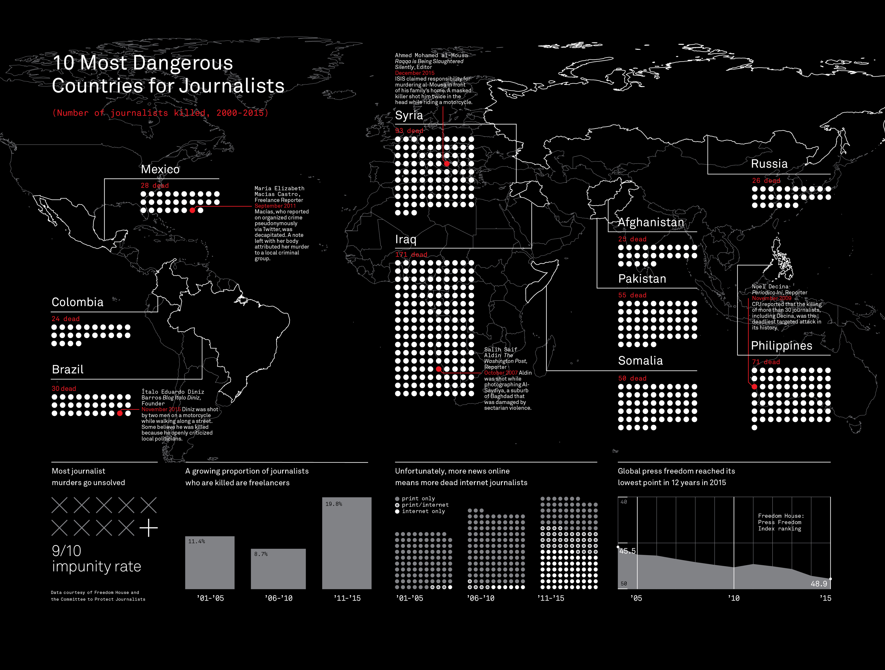

I am a second year master student at MIT, majoring in transportation. Currently doing research on Intelligent Transportation System (ITS) at MIT ITS Labatory. My research focuses on Scenario Analyzer for Dynamic Transportation Assignment (DTA) system, especially energy estimator for DTA system. I am passionate about data analysis and data visualization. I have two years experience with Python,R and other transportation analysis tools.
Reducing the size of Great Boston Area network and check its connectivity, aiming at improving the performance of real-time DTA system's computation speed.
Implementing scenario analyzer with machine learning algorithms to estimate energy consumption and energy savings when introducing a new traffic technology.
Designing and implementing an online database using SQL, Python and shell script.
Analyzing and visualizing the pattern of large-scale traffic demand and supply data using Python and Carto.
Testing the performance of a real-time DTA system, i.e. DynaMIT software, (based on Ubuntu platform) using Linux perf and gprof tools.
Parsed and cleaned up large-scale housing price and description data from Craigslist using Python and JavaScript.
Analyzed the pattern of housing data in geospatial and statistical dimension using ArcGIS, Carto and D3.
Designed HouseMatters website using JavaScript, HTML and JSON to present the analysis results.
Conducted complex data analysis of geospatial data sets, including criminal data set and public space data set.
Modeled and simulated cites using CityScope and CityMatrix platforms through linear programming.
Implemented a data-driven, evidence-based approach to interpret safety quality of a city using interactive tools.
Summarized research progress in transportation network design near High Speed Railway (HSR) Station and investigated relevant prospects for improvement in transportation network management.
Conducted macroeconomics analysis based on historical traffic flow data of outbound, inbound and within and optimized the route choice of different vehicle types through trip-based modeling.
Provided operation and management suggestions for policy making aimed at smart transportation network and mixed land use development.
GPA: 3.8/4.0
Relevant Coursework: Data Storytelling Studio, Big Data and Society, Transportation Systems Analysis, Transportation System: Demand & Econ, City Science, Engineering Computation and Data Science, Statistics and Applications
GPA: 3.9/4.0
Relevant Coursework: Transportation Planning, Urban Transportation, Remote Sensing & GIS, General Theory on Urban Planning, Urban Economics
As the Internet speeds up the spread of information, the world becomes more transparent. However, the journalists, who share the information with us, shoulder more of the danger.
Created by Luke Shuman, the visualization shows the number of journalists killed in 10 countries between 2000 and 2015. The goal is to draw the attention of media workers as well as the government. The authors want the reader to notice the dangerous situation of journalists and protect those journalists. Their target audience appears to be media workers and the government.
The authors use a world map as a base panel to show the number of casualties and add four more analysis based on the other data source. At the bottom of the picture, the authors examine the relationship between casualties and the media type, between casualties and press freedom index, between casualties and reporters’ employment status. Most important, the authors point out that the impunity rate is extremely high. Interestingly, there is a special sentence lies on the bottom, saying that “Data courtesy of Freedom House and the Community to Protect Journalists”. Apparently, the authors want the United Nations to help solve the crisis.
This is an effective visualization because it presents the “dead journalists” topic to the target audience and would successfully draw their attention. The important data is marked by red color, which stands out with the black base map. Furthermore, the high impunity rate stands out at the bottom and conveys the most important message to the audience: the global community must protect those who perform this vital service.
Although the visualization conveys the important message as the authors expect, some analysis seems unreasonable. For example, the conclusion that more news online means more dead internet journalists seems unreliable. As the internet grows fast, the number of internet journalists dramatically increases, which is obvious. We need to compare the ratio of death internet journalists and the ratio of print journalists to make a conclusion.
Source: https://www.good.is/infographics/issue-38-citizen-journalism#open
